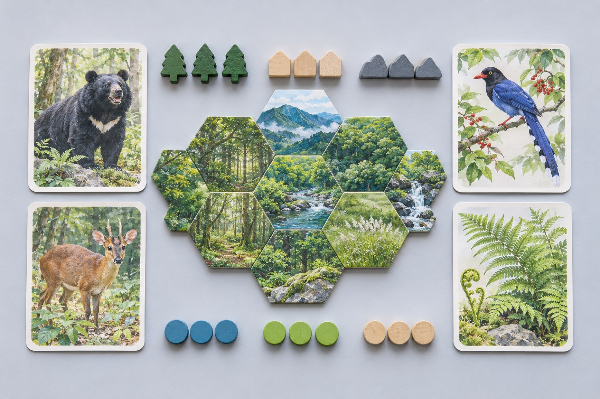

贊助紀錄詳情

目前達成247%
剩12天
付款資訊
- 贊助編號
- IM-20260918-0016
- 付款時間
- 付款方式
- 信用卡（末四碼 5038）
- 付款金額
- NT$ 2,280
若募資期滿未達標，款項會在 7 個工作天內全額原路退回。
我的方案
- 方案名稱
- 標準單入組
- 回饋內容
-
- 帆布包 × 1
- 專屬編號吊牌
- 保養布一條
- 終身維修服務
- 顏色
- 募資結束後會寄送填寫表單，屆時再選即可，不影響現在的贊助。
- 方案金額
- NT$ 2,280
- 額外支持
- NT$ 0
- 總計
- NT$ 2,280
預計出貨
收件資訊
- 收件人
- 陳柏宇
- 手機號碼
- 0912-345-678
- 收件地址
- 70801 台南市安平區平通路 128 號 5 樓
出貨前會寄送通知，可更改收件地址。
生產與交付進度
以下是這個專案的生產里程碑。每完成一個階段我們都會更新，任一階段延遲超過 14 天，平台會主動通知你。
-
里程碑 1｜設計定版
狀態：已完成時間：最新更新：更新 09/02：第七版打樣通過，肩帶襯墊厚度從 3mm 調整為 5mm。
-
里程碑 2｜樣品確認
狀態：已完成時間：最新更新：更新 10/14：三個顏色的量產樣已完成，墨綠色因染缸批次差異微調配方。
-
里程碑 3｜量產備料
狀態：進行中時間：預計 完成最新更新：更新 11/08：布料已進廠 2,400 碼，五金待 11/20 到貨。
-
里程碑 4｜出貨
狀態：未開始時間：預計最新更新：依贊助順序分批出貨，出貨前會寄送通知信。
取消贊助
募資期間內可於「我的贊助」自行取消並全額退款；募資結束後因已進入備料，恕無法取消。
這筆贊助可以在 募資結束前取消，NT$ 2,280 會在 7 個工作天內原路退回你的信用卡（末四碼 5038）。
設計稿狀態示意
其他 4 種贊助狀態在這頁的樣子
正式畫面是帆布包這筆募資中的贊助；下面每種狀態只畫縮小版的專案摘要，加上這個狀態才有的內容。
已達標待生產
Notion 沒有這種狀態的贊助紀錄，這裡只示範徽章與說明，不編專案。收件資訊照樣可以修改。
募資已結束並達標，提案者正在準備生產；開始生產後，進度會更新在生產與交付進度。
取消贊助
募資結束後因已進入備料，恕無法取消。
生產中
生產與交付進度不畫時間軸，只用「目前進度：量產備料 ‧ 預計 2027/04 出貨」這一句表示目前的階段（和徽章旁的目前進度放一處即可）；Notion 沒有這個專案的里程碑，不補節點日期與更新，也不沿用帆布包的里程碑。出貨前收件資訊都可以修改。

OrbitLight 模組化桌上照明系統
微光製造所
- 方案
- 雙燈管組
- 金額
- NT$ 4,280
- 贊助於
目前進度：量產備料 ‧ 預計 出貨
取消贊助
募資結束後因已進入備料，恕無法取消。
已出貨
只顯示物流單號，不做查詢連結（物流追蹤串接是 Notion「本次不包含」的項目）；不顯示取消贊助。

島嶼生態｜台灣原生種策略桌遊
山貓遊戲設計
- 方案
- 標準版 × 1
- 金額
- NT$ 1,280
- 贊助於
寄出 ‧ 宅配通 2714-8830-xxxx
物流資訊
- 寄出日期
- 物流業者
- 宅配通
- 物流單號
- 2714-8830-xxxx
收件資訊
已經寄出，收件資訊無法再修改。
募資失敗 ‧ 已退款
收件資訊、生產與交付進度、取消贊助都不顯示；整塊降一階，和個人頁卡片 4 一樣。
回到土裡的咖啡渣杯
循環物料實驗室
- 方案
- 雙入組
- 金額
- NT$ 1,280
- 贊助於
款項已於 原路退回
這個專案未達成目標金額，所有款項已全額退回贊助者。
付款資訊
- 退款
- NT$ 1,280， 原路退回
取消贊助確認對話框
按下「取消贊助」會出現的對話框，畫在這裡方便檢查。
確定要取消這筆贊助嗎？
取消後，「一只走十年的台南帆布包」標準單入組的贊助就不再成立，NT$ 2,280 會在 7 個工作天內全額原路退回信用卡（末四碼 5038）。募資結束前想再支持，可以重新選擇方案。